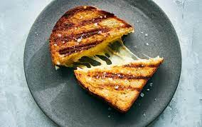

Grilled Cheese

Description
Grilled cheese is a hot sandwich made with buttered and toasted bread and originally filled with American cheese, but is now commonly made with one or more different cheeses.
Ingredients
- American Cheese
- Butter
- 2 pieces of bread
Steps
- Let butter melt in pan
- Make a sandwich with the cheese in the middle of both slices
- Cook the sandwich on the pan until golden toasted